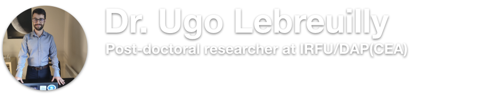

Education
2017-2020 PhD at Ecole normale supérieure de Lyon with a grant form Ecole normale supérieure Paris-Saclay
2016-2017 Master 2 at Observatory of Paris/UPMC/ENS in Astronomy and Astrophysics
2014-2015 Master 1 at ENS Paris-Saclay/UPMC in Fundamental physics
2013-2014 Bachelor ENS Paris-Saclay/UPMC in Fundamental physics (Normalien 2013-2017)
2010-2013 Preparatory class for competitive examination in Physics at lycée Victor Hugo (Caen)
2020-Today Post-doctoral researcher at CEA Saclay under the ERC ECOGAL (PI: Dr Hennebelle)
2017-2020 PhD at ENS de Lyon directed by Dr. Benoît Commerçon : "Star formation : Dynamics of interstellar dust"
2016-2017 Master thesis at ENS de Lyon supervised by Dr. Benoît Commerçon "Dust dynamics in star formation"
2015-2016 Internship at the Université libre de Bruxelles supervised by Dr. Lionel Siess : Formation of electron capture supernovae in binary systems
2014-2015 Internship at the Queen Mary university of London supervised by Dr. Sijme Jan Paardekooper : Interaction between a giant planet and a protoplanetary disc
2013-2014 Internship at the Observatory of Paris supervised by Dr. Carlos Garrido Alzar : Characterizing the imaging system of a cold atom gyroscope on a chip.
2018--2019 Internship jury member at ENS de Lyon (Astrophysics, master level)
2017--2018 Teaching assistant (60h) at INSA Lyon (Electromagnetism, bachelor level)
2016--2017 Oral examinator at Lycée Raspail (Physics, preparatory classes)
2019 Ramses user meeting, Copenhagen, Denmark "A dynamical solver for dust in ramses"
2019 EWASS, Lyon-France, Cosmic dust (r)evolution "Star formation : The dynamics of small dust grains"
2019 Workshop on polarization in protoplanetary disks and jets, San cugat-Spain "Protostellar collapse of a gas and dust mixture"
2018 Astrosim, Lyon-France "Dust dynamics on adaptive-mesh-refinement grids: application to the protostellar collapse "
2018 Ramses user meeting, Lyon-France "Dust dynamics on adaptative mesh-refinement grids in the diffusion approximation"
2018 IAU,Vienna-Austria, Nano Dust in Space and Astrophysics "Dust dynamics in adaptive-mesh-refinement codes: application to protostellar collapses"
2018 SF2A, Bordeaux-France, Atelier général du PNPS "Dynamical treatment of small dust grains"
2017 Ramses user meeting, Nice-France "Implementing dust dynamics in RAMSES"
2019 Sant Cugat Forum Award for Young Scientists
2018 Astrosim 2018, Best poster
2018 Kade fellwoship, Collaboration with the Dr Mordecai Mark Mac Low,$9500
2017 Summer school, Copenhagen, Astrophysical Plasmas - From Planets to Galaxies
2017 Summer school, Lyon, Astrosim
(Magneto)hydrodynamics,Dust dynamics, Stellar evolution Star/planet formation,Classical physics, Numerical methods,Analysis, Linear algebra and plenty of other stuff..